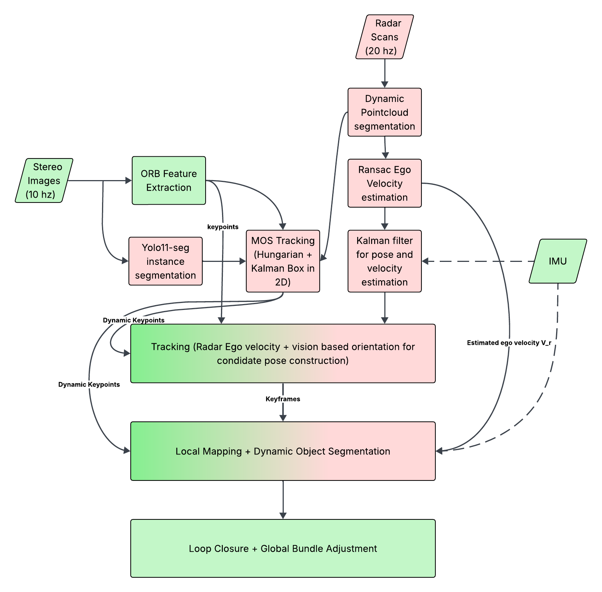
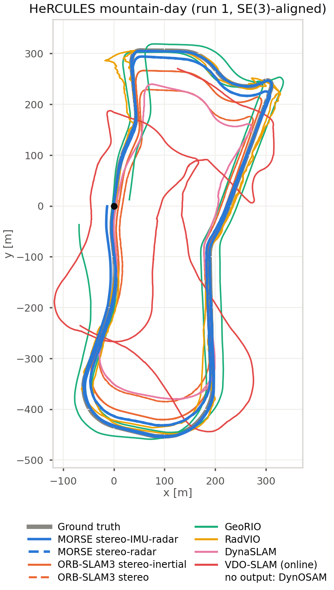

MORSE: Moving-Object Segmentation and Metric Localization via Radar-Visual Bundle Adjustment
Abstract
In this work we propose MORSE, a real-time pipeline for simultaneous moving object segmentation, ego motion estimation and mapping that utilizes Radar, Stereo images and optional IMU. Radar Doppler breaks the circular dependency, since it measures metric ego velocity independently of vision, so ego motion and object velocities can be estimated in sequence. This also enables robust localization in visually degenerate environments such as night-time environments and environments with rain, low light and glare. On multiple scenes in highway, urban and mountain environments and night, day, night-rain and day-rain sequences from four datasets, MORSE reduces the localization error 3.7× relative to stereo ORB-SLAM3 on the highway and 17× relative to stereo-inertial ORB-SLAM3 at night, and estimates a correct velocity for 84% of moving objects at 120–200 m, where vision-based baselines estimate none beyond 60 m.
Method
Ego-motion and moving-object estimation are circular: an object's velocity can only be measured relative to an ego-motion estimate, and the ego-motion estimate is corrupted by the moving objects it does not know about. Radar breaks this circular dependence. Its static returns give a metric ego velocity independent of the visual estimate, while each return on an object directly measures its relative radial velocity. Stereo images provide the scene geometry and the semantics of the objects, and an IMU, when available, carries the motion through visually degenerate stretches.

MORSE overview. Pink: components added or modified by MORSE; green: unchanged from ORB-SLAM3.
MORSE builds on ORB-SLAM3's tracking, local-mapping and loop-closing threads and extends them in four places: radar preprocessing, moving-object segmentation in tracking, a two-stage radar-visual local bundle adjustment (BA), and, with an IMU, radar in the inertial BA together with a vision-outage mode.
1. Radar ego velocity and return labelling
A static radar return measures the radar's own velocity along its bearing, so the ego velocity of each scan follows from its static returns by least squares, solved inside RANSAC because the scan also contains returns from moving objects. Returns that agree with the ego velocity form the static set; the rest are labelled dynamic. The velocity is metric and needs no visual scale.
2. Moving-object segmentation and tracking
Instance masks from a YOLO11 segmentation network and radar clusters (grouped by position and ego-compensated radial velocity) define object candidates in each frame. Objects are tracked across frames with Hungarian assignment and a 2D Kalman box filter, and the ORB keypoints on an object are kept out of the static map and assigned to that object.
3. Ego-pose tracking with a radar motion prior
ORB-SLAM3 predicts each frame's pose with a constant-velocity model. MORSE keeps the predicted rotation but replaces the predicted translation with the integrated radar ego velocity. The prediction is therefore metric and independent of past visual motion, which keeps the feature search narrow under sudden speed changes and in weakly textured frames.
4. Two-stage radar-visual local bundle adjustment
Stage 1 (ego BA) adds radar Doppler ego-velocity factors to the stereo reprojection factors, gives each keyframe a world velocity, and estimates a shared stereo scale that corrects the bias in the calibrated stereo baseline online. Stage 2 (object BA) fixes the ego state and estimates each moving object's points and velocity from its stereo observations and its radar Doppler returns. After each Stage-2 BA, an object is labelled MOVING, STATIC or POTENTIAL (undecided) from a significance test on its estimated velocity.
5. Stereo-IMU-radar mode
When an IMU is available, the radar ego-velocity factors and scaled stereo factors are added to ORB-SLAM3's visual-inertial BA. An error-state Kalman filter fuses the IMU prediction with the radar ego velocity, so when vision fails (darkness, glare, rain) MORSE dead-reckons on IMU and radar alone and re-attaches to the same map when vision returns, instead of starting a new map.
Qualitative Results on MAN TruckScenes
Ten 20 s scenes covering highway, city and terminal driving in clear, overcast, rain and snow weather, by day, at twilight and in the dark. Each video shows the top-down map with object velocity arrows (left) and the camera view with each tracked object's class, state, speed and range (right).
Scene 00 · Terminal · Clear · Day
Scene 01 · Highway · Clear · Dark
Scene 02 · City · Overcast · Day
Scene 03 · Highway · Overcast · Day
Scene 04 · Highway · Overcast · Day
Scene 05 · Terminal · Rain · Day
Scene 06 · City · Clear · Twilight
Scene 07 · City · Snow · Day
Scene 08 · Highway · Rain · Day
Scene 09 · City · Clear · Mixed lighting
Localization Accuracy

HeRCULES mountain-day (3.9 km): estimated trajectories against ground truth (SE(3)-aligned). MORSE stereo-IMU-radar stays closest to the ground truth.
| Method | TruckScenes (10 scenes) | HeRCULES day | ||
|---|---|---|---|---|
| ATE [m] | Scale | ATE [m] | Scale | |
| ORB-SLAM3 (stereo) | 2.19 | 0.981 | 50.53 | 1.218 |
| ORB-SLAM3 (stereo-inertial) | 13.15 | 0.917 | 26.81 | 1.104 |
| DynaSLAM | 7.38 | 0.984 | 58.73 | 1.229 |
| VDO-SLAM | 14.05 | 0.890 | 227.44 | 0.677 |
| DynOSAM | 16.19 | 0.900 | crash | – |
| GeoRIO | 11.98 | 0.886 | 40.11 | 0.967 |
| RadVIO | 261.14 | 18.232 | 22.49 | 1.007 |
| MORSE (stereo-radar) | 0.33 | 1.003 | 12.05 | 1.035 |
| MORSE (stereo-IMU-radar) | 0.20 | 1.005 | 2.98 | 0.999 |
Absolute trajectory error (ATE, SE(3)-aligned) and Sim(3) scale (ideal 1.0). TruckScenes: mean over scenes; HeRCULES day: mean over 3 runs.
Moving-Object Velocity
Because each radar return on an object measures its radial velocity directly, MORSE estimates object velocities at ranges where stereo depth alone is too noisy. The table gives the share of moving objects segmented by MORSE with a correct velocity, by range.
| Dataset | 0–60 m | 60–120 m | 120–200 m | >200 m |
|---|---|---|---|---|
| TruckDrive (highway) | 92% | 91% | 84% | 70% |
| TruckScenes | 61% | 29% | 16% | – |
On TruckDrive, MORSE segments 93–99% of moving objects at every range with a moving precision of 1.000. Vision-based dynamic SLAM (VDO-SLAM, DynOSAM) segments about 20% within 60 m and almost nothing beyond, and Doppler-only estimators fall to 35–37% at long range. Without radar in the object stage, MORSE's velocity-correct recall drops from 70% to 17% beyond 200 m.